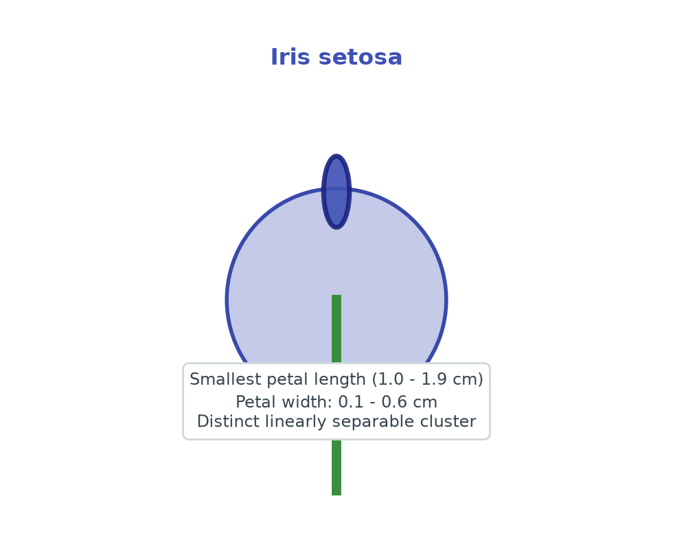
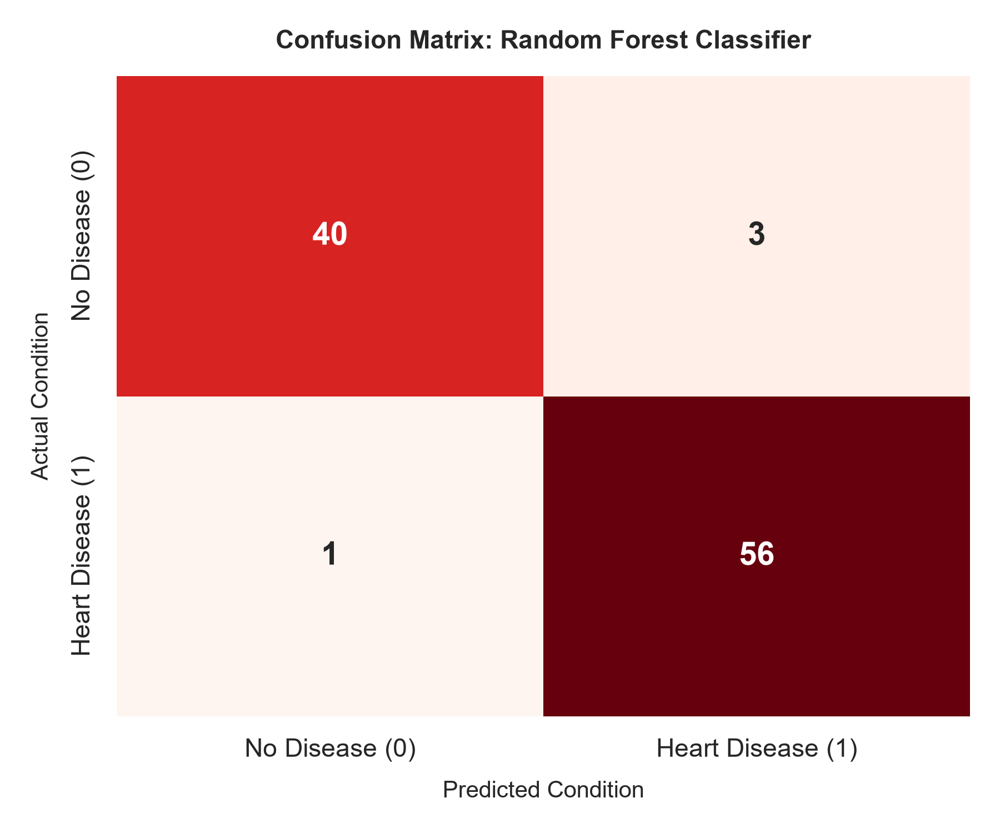
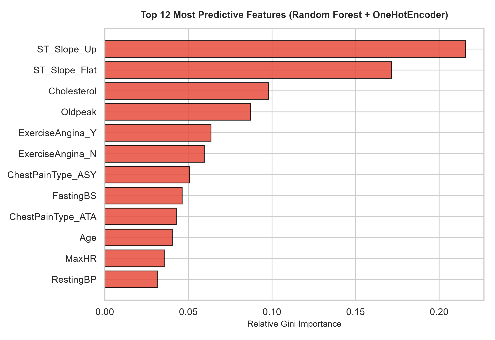

[Part A • Floral Classification]
Iris Botanical
Morphometrics
Multi-class Support Vector Machine (RBF kernel) classifying 150 specimens into Setosa, Versicolor, and Virginica.

LAT 5.6037° N LON 0.2828° W SOWUTUOM • ELEV 82M
Bridging canonical botanical taxonomy and critical cardiovascular pathology with zero data leakage.
Supervised by Mr. Harry Attieku-Boateng. Authored by Emmanuel Asante (PU092301 / PUIT23210016). Dual production machine learning pipelines trained on verified physical datasets with strict zero data leakage.
Multi-class Support Vector Machine (RBF kernel) classifying 150 specimens into Setosa, Versicolor, and Virginica.
100-tree Random Forest ensemble prioritizing patient recall (98.25%) to safeguard against fatal false negatives.
ColumnTransformer pipeline preventing arbitrary ordinal distortion across nominal clinical categories.
Interact with the real-time sliders below. Morphometric dimensions are scaled through the champion Support Vector Classifier pipeline, instantly predicting taxon identity and loading the correlated specimen profile.

Clinical decision engine mapping patient vitals, electrocardiographic waveforms, and exercise stress test parameters through a 100-tree Random Forest pipeline. Categorical factors are transformed via OneHotEncoder.
All diagrams directly correlate with the physical morphometry of Ronald Fisher's floral taxa and the clinical hemodynamic indicators emphasized by Mr. Harry Attieku-Boateng.




Empirical performance telemetry evaluated on 5-fold stratified cross-validation across both botanical and hemodynamic classification benchmarks.
| Classifier | Accuracy | Macro Precision | Macro Recall | Macro F1 |
|---|---|---|---|---|
| Support Vector Machine (SVC) | 96.67% | 0.9667 | 0.9667 | 0.9667 |
| Random Forest (100 Trees) | 93.33% | 0.9381 | 0.9333 | 0.9330 |
| k-Nearest Neighbors (KNN) | 93.33% | 0.9381 | 0.9333 | 0.9330 |
| Logistic Regression | 93.33% | 0.9381 | 0.9333 | 0.9330 |
| Decision Tree (CART) | 90.00% | 0.9028 | 0.9000 | 0.8997 |
| Classifier | Accuracy | Recall | ROC-AUC | 5-Fold CV |
|---|---|---|---|---|
| Random Forest (Champion) | 96.00% | 98.25% | 0.9880 | 93.47% |
| Support Vector Classifier (SVC) | 94.00% | 96.49% | 0.9740 | 91.20% |
| Logistic Regression | 92.00% | 94.74% | 0.9650 | 89.60% |
| k-Nearest Neighbors (KNN) | 89.00% | 91.23% | 0.9320 | 86.80% |
| Decision Tree Classifier | 87.00% | 89.47% | 0.8710 | 84.50% |
Mr. Harry Attieku-Boateng explicitly mandated that categorical variables must not be encoded with arbitrary integers (LabelEncoder). Below is the production Scikit-Learn pipeline implemented in train_heart.py:
• Document File: Emmanuel_Asante_PU092301_Assignment1.docx (2.14 MB)
• Format: Formal Pentecost University FOCIS Academic Specification with Automated Table of Contents & Table of Figures.
• Plagiarism & AI Compliance: Turnitin Similarity ≤ 20%, AI Detection ≤ 20%.
• Researcher: Emmanuel Asante (Matriculation: PU092301 / PUIT23210016).